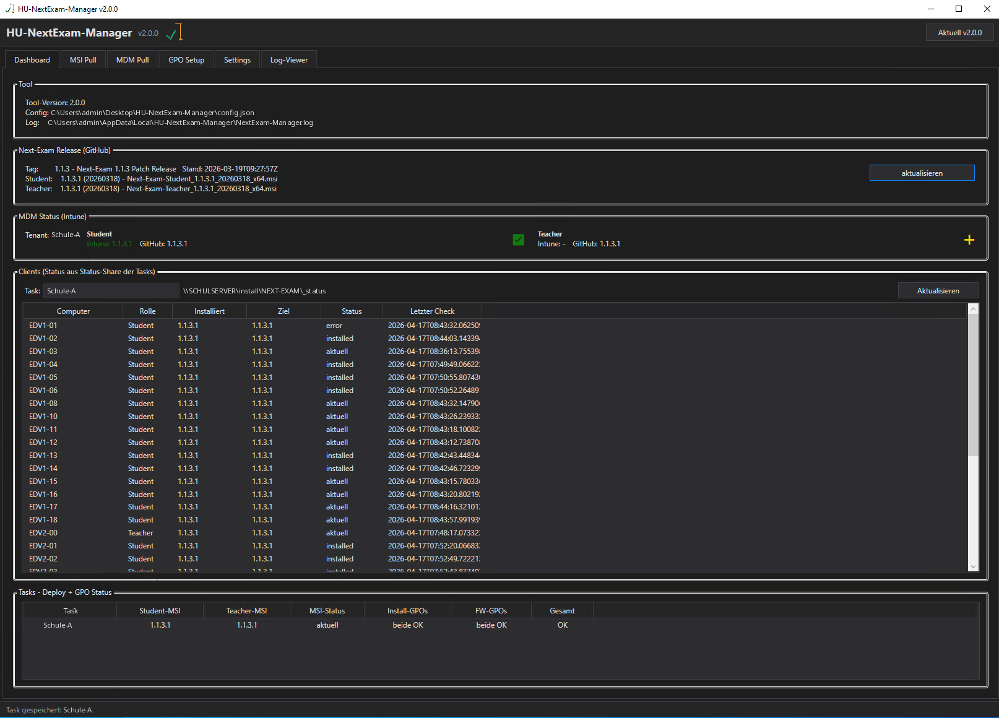
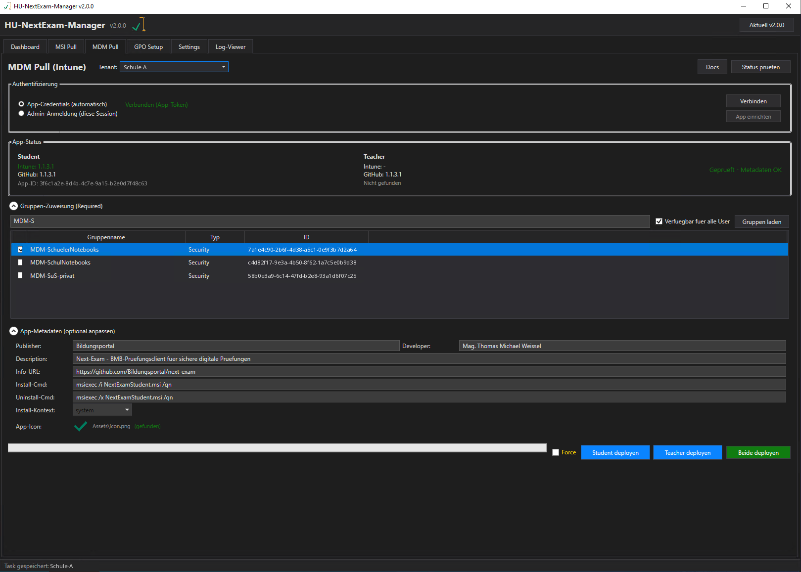

Willkommen beim HU-NextExam-Manager
Der HU-NextExam-Manager (WPF, PowerShell 5.1) verteilt die Prüfungssoftware Next-Exam automatisch – per Gruppenrichtlinie in Active-Directory-Umgebungen und per Intune (Microsoft Graph) auf MDM-verwaltete Geräte. Einmal eingerichtet, holt er neue Versionen täglich selbst.
Docs\Anleitung.html.1Überblick und Ablauf
Ohne Tool braucht jede Next-Exam-Version Handarbeit: MSI herunterladen, auf Shares kopieren, GPOs pflegen, Firewall-Regeln setzen, WMI-Filter anlegen. Der Manager erledigt das in einem Durchgang.
Die Reiter
| Reiter | Inhalt |
|---|---|
| Dashboard | Tool-Info, aktuelles Next-Exam-Release, MDM-Status, Clients je Task und Ampel je Task – siehe Dashboard. |
| MSI Pull | Release abfragen, MSIs auf die Shares verteilen, Auto-Pull – siehe MSI Pull und AutoPull. |
| MDM Pull | Intune-Deployment – siehe MDM/Intune. |
| GPO Setup | GPOs anlegen, verknüpfen, entfernen – siehe GPO Setup. |
| Settings | Tasks, MDM-Tenants, Desktop-Verknüpfung, Tool-Update – siehe Settings. |
| Log-Viewer | Protokoll des Tools – siehe Log-Viewer. |
Oben rechts sitzen die Knöpfe Update (siehe Tool-Update) und Anleitung; unten zeigt die Statusleiste, woran das Tool gerade arbeitet. Beim Start erscheint kurz Initialisierung … – je nach Netzwerk/AD kann das bis ca. 40 Sekunden dauern.
2Installation und Start
Voraussetzungen
| Für | Benötigt |
|---|---|
| GPO-Verteilung | Windows Server 2016+ oder Client mit RSAT · PowerShell 5.1 · Module GroupPolicy, ActiveDirectory, NetSecurity, ScheduledTasks · Domänen-Admin oder delegierte Rechte zum Anlegen und Verknüpfen von GPOs (Richtlinien-Ersteller-Besitzer) für die Ziel-OUs |
| MDM/Intune (zusätzlich) | Microsoft-365-Tenant mit Intune-Lizenz · Globaler Administrator oder Intune-Administrator (für App-Registrierung und Admin-Consent) · Intune-verwaltete Geräte · Internetzugang vom Admin-PC (Graph API, Azure-Blob-Upload) |
Erstinstallation mit Pull.ps1
- PowerShell als Administrator öffnen (nicht die ISE – WPF-Fenster stürzen dort ab).
Pull.ps1in den gewünschten Ordner laden und ausführen. Für mehrere Admins auf einem Server empfiehlt sichC:\Tools\HU-NextExam-Manager:$d = 'C:\Tools\HU-NextExam-Manager' New-Item -ItemType Directory -Path $d -Force | Out-Null Invoke-WebRequest "https://raw.githubusercontent.com/ChiliApple/HU-NextExam-Manager/main/Pull.ps1" ` -UseBasicParsing -OutFile (Join-Path $d 'Pull.ps1') cd $d; .\Pull.ps1- Pull.ps1 lädt die aktuelle Version, prüft sie (siehe Prüfsumme und Signatur) und legt alle Dateien in den Ordner.
| Zielordner | Regel |
|---|---|
-Target <Pfad> | gewinnt immer, z. B. .\Pull.ps1 -Target 'C:\Tools\HU-NextExam-Manager' |
| Pull.ps1 liegt in einer Installation | (Modules\ oder HU-NextExam-Manager.ps1 daneben) → genau dieser Ordner wird aktualisiert – Desktop, C:\Tools oder Share |
| Pull.ps1 liegt allein | → Ordner %USERPROFILE%\Desktop\HU-NextExam-Manager wird angelegt |
Vorab wird geprüft, ob in den Zielordner geschrieben werden darf. Fehlt das Recht: PowerShell als Administrator starten oder Ordnerrechte setzen. Der Ordner braucht Änderungsrechte für alle, die das Tool aktualisieren – auch der AutoPull schreibt hinein.
Starten
| Weg | Verhalten |
|---|---|
| Desktop-Verknüpfung (empfohlen) | In Settings › Desktop-Verknüpfung den Knopf Verknüpfung klicken: Linksklick = eigener Desktop, Rechtsklick = öffentlicher Desktop (alle Benutzer dieses Rechners, mit Sicherheitsabfrage). Dabei wird lokal ein Starter HU-NextExam-Manager.exe mit Logo erzeugt – ohne Konsolenfenster, an die Taskleiste anheftbar. Alte Verknüpfungen auf Start.vbs/EXE desselben Ordners werden ersetzt. Klappt die EXE-Erzeugung nicht, zeigt die Verknüpfung auf Start.vbs. |
Start.vbs | Doppelklick: UAC-Abfrage, dann startet das Tool ohne Konsolenfenster; das Fenster erscheint nach einigen Sekunden. |
| Manuell | In einer Administrator-PowerShell: powershell.exe -NoProfile -ExecutionPolicy Bypass -File .\HU-NextExam-Manager.ps1 |
config.json liegt neben dem Tool, nicht in %APPDATA%. Der ganze Ordner lässt sich auf einen anderen Server kopieren. MDM-Secrets liegen dagegen DPAPI-verschlüsselt pro Benutzer in %APPDATA%\HU-NextExam\ – jeder Admin hinterlegt sie selbst.3Settings: Tasks einrichten
Ein Task ist eine Verteil-Konfiguration – z. B. eine Schule oder Domäne. Pro Server sind beliebig viele Tasks möglich.
- Reiter Settings, Bereich Tasks: + Neu und einen Namen eingeben (z. B. den Schulnamen).
- Rechts unter Task-Details die Felder ausfüllen (Tabelle unten).
- Task speichern. Mit Verbindung testen prüfen: DC erreichbar (Ping), Student-/Teacher-Share erreichbar.
Felder eines Tasks
| Feld | Bedeutung |
|---|---|
| Anzeigename | Name des Tasks in allen Listen. |
| Domain FQDN | z. B. schule.local. |
| DC Server (Hostname oder IP) | Domänencontroller für alle GPO-Operationen. Den vollqualifizierten Namen eintragen (z. B. DC1.schule.intern) – mit Kurzname oder IP kann der SYSVOL-Zugriff scheitern (siehe Fehlerbehebung). |
| Student-Share (UNC) / Teacher-Share (UNC) | Ablage der MSIs, z. B. \\FILESRV\install\NEXT-EXAM\Student. ... öffnet die Ordnerauswahl. Clients brauchen Leserecht, Schreibrecht nur Admins. |
| Status-Share (Client-Feedback) - UNC | Optional. Clients schreiben nach jeder Prüfung eine kleine JSON-Datei hinein. Vorschlag: <übergeordneter Ordner des Student-Shares>\_status. Anlegen + ACL legt den Ordner an und setzt die Rechte – siehe Clients-Status. Leer = kein Client-Feedback. |
| OU-Ziel Student / OU-Ziel Teacher | OU als DistinguishedName, z. B. OU=Workstations,OU=EDV,DC=schule,DC=local. Hierhin werden Install- und Firewall-GPOs verknüpft. |
| WMI-Filter Student / Teacher (Typ + Muster) | Trennt Student- und Teacher-PCs, wenn beide in derselben OU liegen – siehe WMI-Filter. Leer = kein WMI-Filter. |
| GPO-Name-Praefix | Standard HU-NEXT-EXAM-. Daraus entstehen die GPO-Namen (siehe GPO Setup). |
| Firewall-Einstellungen (fuer FW-GPOs) | Aufklappbar: Profile (Standard Domain, Private), Student/Teacher EXE-Pfad für die Programmregel (Standard %ProgramFiles%\Next-Exam-Student\Next-Exam-Student.exe bzw. …\Next-Exam-Teacher\Next-Exam-Teacher.exe), optional TCP-Port zulassen (Standard 22422) und UDP-Ports zulassen (Standard 6024,6025). |
Entfernen löscht den markierten Task aus der Konfiguration (mit Rückfrage) – GPOs im AD bleiben dabei bestehen; dafür gibt es GPOs entfernen im Reiter GPO Setup.
WMI-Filter
| Typ | Muster und Ergebnis |
|---|---|
Prefix | Hostname-Anfang: PC-S ergibt Name LIKE 'PC-S%' |
Pattern | reiner LIKE-Ausdruck, z. B. %-01 |
List | explizite Liste, komma- oder semikolongetrennt: PC1,PC2,PC3 |
Custom | eigene WQL-Abfrage – nötig, sobald NOT, AND oder OR vorkommt |
Beispiel: Der Lehrer-PC im Raum endet auf -01 (PC-EDV1-01), alle anderen sind Schüler-PCs:
| Feld | Typ | Muster |
|---|---|---|
| WMI-Filter Student | Custom | SELECT * FROM Win32_ComputerSystem WHERE NOT Name LIKE '%-01' |
| WMI-Filter Teacher | Custom | SELECT * FROM Win32_ComputerSystem WHERE Name LIKE '%-01' |
' verwenden, keine doppelten. Keine Klammern um den LIKE-Ausdruck.MDM-Tenants und Desktop-Verknüpfung
Im Bereich MDM-Tenants (Intune) stehen Name, Tenant-ID, Client-ID und ob Credentials gespeichert sind. Knöpfe: + Hinzufuegen, Bearbeiten, Entfernen und Secret speichern (Client-Secret DPAPI-verschlüsselt speichern; die Client-ID muss vorher über Bearbeiten gesetzt sein). Die Einrichtung beschreibt MDM/Intune.
Der Bereich Desktop-Verknüpfung ist unter Starten beschrieben, der Bereich Tool-Update unter Tool-Update.
4Dashboard

| Bereich | Inhalt |
|---|---|
| Tool | Tool-Version, Pfad der config.json und der Log-Datei. Dazu der Update-Kanal und die Prüfung der installierten Version, z. B. installiert …, geprüft: Prüfsumme + Signatur (1B669AE2…) – gelesen aus installed.json im Tool-Ordner. |
| Next-Exam Release (GitHub) | Tag und MSI-Dateinamen für Student und Teacher. aktualisieren fragt neu ab. |
| MDM Status (Intune) | Erster konfigurierter Tenant mit Credentials: Intune-Version gegen GitHub-Version für Student und Teacher. |
| Clients | Task wählen: Computer, Rolle, installierte Version, Zielversion, Status und letzter Check – aus dem Status-Share. Aktualisieren und Aufräumen siehe Clients-Status. |
| Tasks - Deploy + GPO Status | Pro Task: Student-/Teacher-MSI auf dem Share, MSI-Status (aktuell, veraltet, nicht deployed), Install-GPOs und FW-GPOs (beide OK, teilweise, fehlen) und Gesamt: OK, Handlungsbedarf (MSI veraltet oder GPOs fehlen) oder pruefen. |
5MSI Pull
- Release abfragen – holt das aktuelle Next-Exam-Release von
github.com/Bildungsportal/next-exam(Tag, Stand, Student- und Teacher-MSI). - Optional Changelog... – zeigt die Release-Notes; kopieren oder als Markdown/Text speichern.
- Task(s) in der Liste markieren (Strg/Shift für mehrere) und Auswahl aktualisieren – oder Alle aktualisieren. Doppelklick auf einen Task verteilt nur diesen.
Die MSIs werden einmal ins TEMP-Verzeichnis geladen und dann auf den Student- bzw. Teacher-Share jedes Tasks kopiert. Daneben liegt je eine Versionsdatei (version-student.json / version-teacher.json), aus der das Client-Script die Zielversion liest. Die Spalten zeigen die Version pro Share und den Status (aktuell, Student veraltet, Teacher veraltet, beide veraltet). Status aktualisieren liest die Shares neu.
Archiv
Ersetzte MSIs wandern in den Unterordner _archive\ des jeweiligen Shares. Aufgehoben werden die letzten 3, ältere werden gelöscht.
Pre-Releases
Haken Pre-Releases einbeziehen: Dann werden auch als Pre-Release markierte Next-Exam-Versionen berücksichtigt (in der Anzeige mit [PRE-RELEASE] markiert). Ohne Haken (Standard) nur stabile Releases. Die Einstellung wird gespeichert und gilt auch für den täglichen Auto-Pull.
6AutoPull (täglich automatisch)
Im Reiter MSI Pull unten: Haken Auto-Pull taeglich um mit Uhrzeit (Standard 03:00, Format HH:mm). Das registriert einen geplanten Task, der das Tool täglich ohne Fenster mit -AutoPull startet. Tasks, deren Shares bereits die aktuelle Version haben, werden übersprungen. Haken entfernen = Task entfernen.
| Modus | Verhalten |
|---|---|
| SYSTEM (empfohlen) | Läuft auch ohne angemeldeten Benutzer. Voraussetzungen: Tool als Admin gestartet · das Computerkonto (DOMÄNE\COMPUTERNAME$) hat Lese-/Schreibrechte auf alle Shares (z. B. über die Gruppe Domänencomputer in der ACL) · Internetzugang über den System-Proxy. Task: \HU-NextExam-Manager\AutoPull. |
| User | Läuft nur, wenn dieser Benutzer angemeldet ist; kein Admin nötig. Verpasste Zeiten werden bei der nächsten Anmeldung nachgeholt. |
Daneben steht der aktuelle Zustand (z. B. (nicht registriert)).
7GPO Setup
Oben die Tasks mit dem Zustand aller vier GPOs und ihrer Verknüpfungen, unten GPO-Details fuer ausgewaehlten Task mit Pfaden, Filtern und Rechten. Aktionen gelten für alle markierten Tasks (Mehrfachauswahl möglich). Status aktualisieren liest alles neu.
Die GPOs eines Tasks
| Name (mit Standard-Präfix) | Zweck |
|---|---|
HU-NEXT-EXAM-Student-InstallHU-NEXT-EXAM-Teacher-Install | Installation/Update auf den Clients |
HU-NEXT-EXAM-Firewall StudentHU-NEXT-EXAM-Firewall Teacher | Firewall-Regeln |
HU-NEXT-EXAM-WMI StudentHU-NEXT-EXAM-WMI Teacher | WMI-Filter (nur wenn ein Muster eingetragen ist) |
Aktionen
| Knopf | Wirkung |
|---|---|
| Install-GPOs | Legt die Install-GPOs an oder aktualisiert sie. Auf den Clients entsteht per GPO-Einstellung (Preferences) ein geplanter Task HU-NextExam-<Rolle>-AutoInstall als SYSTEM. Er startet das Script Startup-NextExam.ps1 aus SYSVOL: Version auf dem Share mit der installierten vergleichen, bei Bedarf msiexec /i … /quiet /norestart, danach Status-JSON schreiben. Trigger: sofort nach dem Anlegen/Aktualisieren durch Group Policy (nächster GP-Refresh, ohne Neustart), beim Systemstart (+2 Minuten) und täglich 07:30. Ist ein WMI-Muster eingetragen, wird der WMI-Filter angelegt und zugewiesen. |
| FW-GPOs | Firewall-GPOs mit Programmregeln (ein- und ausgehend) für den EXE-Pfad, optional TCP-/UDP-Ports – laut Firewall-Einstellungen. Regeln heißen HU-NEM-… und werden bei jedem Lauf neu geschrieben. |
| Mit OU verknuepfen | Verknüpft Install- und FW-GPOs mit dem jeweiligen OU-Ziel. andere OU in der Liste = GPO existiert und ist verknüpft, aber nicht mit der Task-OU; Verknüpfen setzt dann einen zusätzlichen Link. |
| WMI-Filter cleanup | Entfernt alle WMI-Filter mit Präfix <GPO-Name-Praefix>WMI – nötig, wenn sich das Muster ändert oder ein Filter defekt ist. |
| GPOs entfernen | Löscht alle vier GPOs des Tasks aus AD und SYSVOL (mit Rückfrage). |
- Task markieren › Install-GPOs › FW-GPOs › Mit OU verknuepfen.
- Am Client
gpupdate /force(oder Neustart) – der geplante Task läuft danach von selbst und installiert Next-Exam.
8Clients-Status
Ist im Task ein Status-Share eingetragen, schreibt jeder Client nach jeder Prüfung eine Datei <COMPUTERNAME>-<Rolle>.json mit Computer, Rolle, installierter und Zielversion, Zeitpunkt und letzter Aktion (aktuell, installed, error).
- Settings › Task › Status-Share eintragen (Vorschlag
…\_statusübernehmen oder anpassen). - Anlegen + ACL: legt den Ordner an und setzt NTFS-Rechte – Domänencomputer Schreiben, Domänen-Admins Vollzugriff, Vererbung aus (nur dieser Ordner).
- Install-GPOs erneut ausführen – erst dann kennt der Client-Task den Status-Pfad.
- Nach dem nächsten Lauf am Client erscheint er im Dashboard unter Clients.
Aufräumen
Aufräumen (neben Aktualisieren) löscht nach einer Sicherheitsabfrage alle Statusdateien im Status-Share des gewählten Tasks – z. B. wenn nach einer Geräte-Umbenennung alte Rechnernamen hängen bleiben. Die Clients legen ihre Datei beim nächsten Start automatisch neu an.
9MDM/Intune
Für Autopilot-/Intune-verwaltete Geräte ohne Domänenbeitritt (z. B. Geräteinitiative-Notebooks). Next-Exam wird als Win32-App in Intune angelegt; bei neuen Releases aktualisiert das Tool die bestehende App, die Geräte holen das Update selbst.

App-Registrierung einrichten (einmal pro Tenant)
- Tenant anlegen (Settings › MDM-Tenants › + Hinzufuegen) und im Reiter MDM Pull unter Tenant: wählen.
- Unter Authentifizierung Admin-Anmeldung (diese Session) wählen und Verbinden: Der Browser öffnet sich – als Globaler Administrator anmelden und „Consent on behalf of your organization“ anhaken, dann Accept.
- App einrichten und bestätigen. Das Tool legt die App-Registrierung
HU-NextExam-Manager-MDMan: öffentlicher Client (PKCE, Redirect-URIshttp://localhost:8400–8402/callback), BerechtigungenDeviceManagementApps.ReadWrite.AllundGroup.Read.All(Anwendung und delegiert), Admin-Consent, Client-Secret (24 Monate). Die Zugangsdaten werden DPAPI-verschlüsselt gespeichert. - Auf App-Credentials (automatisch) zurückschalten und Verbinden – fertig. Dieser Modus läuft unbeaufsichtigt.
consent_required. Blockiert z. B. Conditional Access den localhost-Rückruf, lässt sich die App-Registrierung auch manuell im Entra-Portal anlegen – Schritt für Schritt in Docs\MDM-Setup.md (Knopf Docs). Beim ersten Verbinden fragt das Tool dann Client-ID, Tenant-ID und Secret ab.| Modus | Eigenschaften |
|---|---|
| App-Credentials (automatisch) | Client-Credentials-Flow, unbeaufsichtigt. Secret DPAPI-verschlüsselt in %APPDATA%\HU-NextExam\mdm_<TenantId>.cred – pro Windows-Benutzer. |
| Admin-Anmeldung (diese Session) | Browser-Anmeldung (Auth-Code-Flow mit PKCE); Token gilt nur für die laufende Sitzung. Für Ersteinrichtung und Tests. |
Deployen
- Tenant wählen, Verbinden. App-Status zeigt Intune-Version gegen GitHub-Version für Student und Teacher.
- Optional Gruppen-Zuweisung (Required): Gruppen laden, Gruppen filtern und anhaken; Verfuegbar fuer alle User stellt die App zusätzlich als „verfügbar“ bereit.
- Optional App-Metadaten anpassen: Publisher, Developer, Description, Info-URL, Install-/Uninstall-Befehl, Install-Kontext (
system/user), App-Icon. - Student deployen, Teacher deployen oder Beide deployen. Force ignoriert den Versionsvergleich und lädt den MSI-Inhalt neu hoch.
Das Tool lädt die MSI von GitHub, verpackt sie mit IntuneWinAppUtil.exe (wird automatisch geladen) als .intunewin, lädt sie in Blöcken zu 6 MB hoch, legt die Win32-App an oder aktualisiert sie, setzt Erkennungsregel (MSI-Produktcode), Install-/Uninstall-Befehle und Icon und weist die Gruppen zu.
Status pruefen vergleicht die Metadaten zwischen GitHub-Release und Intune-App (Version, Beschreibung, Icon, Erkennungsregeln); Abweichungen erscheinen in einer Tabelle mit Intune (IST) und Soll.
Mehrere Tenants: Jeder M365-Tenant braucht eine eigene App-Registrierung; beliebig viele Tenants sind möglich. Das Dashboard zeigt den ersten Tenant mit gespeicherten Credentials.
10Log-Viewer
Zeigt %LOCALAPPDATA%\HU-NextExam-Manager\NextExam-Manager.log (Pfad auch im Dashboard). Filter Level: (DEBUG/INFO/WARN/ERROR) und Suche: für Volltext.
| Knopf | Wirkung |
|---|---|
| Aktualisieren | Log neu einlesen |
| Ordner oeffnen | Log-Ordner im Explorer |
| Log loeschen | Log-Datei leeren (mit Rückfrage). Geht das nicht (Zugriff verweigert), bietet das Tool an, den Log-Pfad auf den Standard unter %LOCALAPPDATA% umzustellen. |
Auf den Clients schreibt das Install-Script nach C:\Windows\Temp\NextExam-<Rolle>-Install.log, msiexec nach C:\Windows\Temp\NextExam-<Rolle>-msiexec.log.
11Tool-Update und Sicherheit
Der Knopf Update
Gibt es im eingestellten Kanal eine neuere, signierte Version, wird der Knopf Update rechts oben gold und zeigt z. B. Update v3.2.1 (im Kanal Test mit Zusatz (Test)). Klick: Das Tool schließt sich, Pull.ps1 lädt die Version, prüft sie und startet das Tool neu.
| Was | Wie |
|---|---|
| Quelle | Updates kommen nur noch aus GitHub-Releases des offiziellen Repositorys. |
| Kanal Stabil (Standard) | Nur freigegebene Releases – für den Produktivbetrieb. |
| Kanal Test | Auch Vorab-Releases – zum Ausprobieren vor der Freigabe. |
| Prüfsumme | Jedes Release enthält HU-NextExam-Manager-files.sha256: SHA256 aller Dateien, erstellt von den automatischen Tests auf GitHub. |
| Signatur | HU-NextExam-Manager-files.sha256.p7s ist die PKCS#7-Signatur des Herausgebers über die Prüfsummen-Datei. Angeboten und installiert werden nur Releases mit gültiger Signatur des eingebauten Zertifikats (Fingerabdruck 1B669AE2…). |
| Alles oder nichts | Zuerst werden alle Dateien geladen und geprüft, erst dann ersetzt. Stimmt eine Prüfsumme nicht, bleibt alles unverändert. |
| Ergebnis | Dashboard › Tool zeigt Kanal und installiert …, geprüft: Prüfsumme + Signatur (1B669AE2…) – aus installed.json. |
Rechtsklick auf Update
| Eintrag | Wirkung |
|---|---|
| Andere Version / Vorversion installieren … | Liste aller Releases mit den Spalten Version, Kanal, Stand, Datum, Prüfsumme, Signatur und Änderungen. Unsignierte Releases sind nicht installierbar. |
| Update-Einstellungen … | springt zu Settings › Tool-Update |
| Release signieren (Herausgeber) … | nur sichtbar auf dem PC, auf dem der private Schlüssel liegt |
| Release freigeben (Herausgeber) … | macht ein Vorab-Release zum freigegebenen Release (siehe unten) |
Settings › Tool-Update
| Einstellung | Bedeutung |
|---|---|
| Kanal | Stabil oder Test |
| Nur signierte Updates annehmen (empfohlen) | Standard: an. Abhaken nur nach einer Warnung; gespeichert als AllowUnsigned in update.json im Tool-Ordner. |
| Fingerabdruck | Fingerabdruck des Signatur-Zertifikats. Für die offizielle Quelle ist er eingebaut – nichts einzustellen. |
Ablauf für den Herausgeber
- Push ins Repository, daraus entsteht ein Vorab-Release; die automatischen Tests auf GitHub hängen die Prüfsummen-Datei an.
- Rechtsklick auf Update › Release signieren (Herausgeber) …. Ein GitHub-Token mit Schreibrecht wird einmal abgefragt und DPAPI-verschlüsselt in
%APPDATA%\HU-NextExam\GitHubSignToken.xmlgespeichert. - Im Kanal Test installieren und prüfen.
- Rechtsklick › Release freigeben (Herausgeber) … – wird ohne gültige Signatur verweigert.
Kommandozeile: Tools\Sign-NextExamRelease.ps1.
Hilfe
Knopf Anleitung oder F1: lädt diese Anleitung immer aktuell von GitHub, passend zur installierten Version; ohne Verbindung öffnet sich die lokale Kopie Docs\Anleitung.html.
Sicherheitshinweise
- Graph-API-Secrets und der Signier-Token werden DPAPI-verschlüsselt gespeichert.
config.jsonmit echten Tokens nie in eine Versionsverwaltung legen. - MSI-Shares: Schreiben nur für Admins, Lesen für die Clients.
- Ein optionaler GitHub-Token in
config.json(ToolSettings.GitHubToken, mehr API-Abrufe pro Stunde) sollte ein feingranularer Nur-Lese-Token nur für dieses Repository sein. - Sicherheitslücken bitte nicht als öffentliches Issue melden, sondern über GitHub Security Advisories.
12Fehlerbehebung
Install-GPOs / FW-GPOs: „Zugriff verweigert (0x80070005)“
Typisch: Löschen und WMI-Filter funktionieren, alles mit SYSVOL-Anteil nicht. Zwei bekannte Ursachen – jeweils auf dem Rechner prüfen, auf dem das Tool läuft:
- DC als Kurzname oder IP eingetragen. SYSVOL ist von manchen Servern nur über den FQDN des DCs erreichbar. In Settings › Task › DC Server den FQDN eintragen (z. B.
DC1.schule.internstattDC1) und speichern. Test:Get-GPO -All -Server DC1.schule.interngegen-Server DC1. - Veralteter DNS-Eintrag der Domäne.
nslookup <domäne>– liefert es mehr Adressen als es DCs gibt, zeigt ein Eintrag auf einen Nicht-DC, und\\<domäne>\SYSVOLläuft zeitweise ins Leere. Den falschen A-Eintrag am Zonen-Stamm im DNS löschen.
Erscheint die Meldung beim Aktualisieren einer bestehenden Install-GPO (Datei mit anderem Besitzer aus einem früheren Lauf), bietet das Tool an, nur diese eine GPO zu löschen und neu anzulegen. Ihre OU-Verknüpfungen müssen danach mit Mit OU verknuepfen neu gesetzt werden.
Clients aktualisieren nicht
- Bis v2.x startete die Installation per GPO-Startup-Script – dessen Auslösung beim Systemstart war auf manchen Clients unzuverlässig. Seit v3.0 übernimmt ein geplanter Task (sofort nach GP-Refresh, beim Start und täglich). Ältere GPOs mit Install-GPOs neu schreiben – sie werden an Ort und Stelle umgebaut.
- Am Client prüfen: Aufgabenplanung ›
HU-NextExam-<Rolle>-AutoInstallvorhanden? LogC:\Windows\Temp\NextExam-<Rolle>-Install.loglesen (z. B. MSI nicht erreichbar, msiexec-ExitCode). - GPO Setup: Sind die GPOs mit der richtigen OU verknüpft (andere OU?) und passt der WMI-Filter auf den Rechnernamen?
- MSI Pull: Liegt die aktuelle Version auf dem Share (aktuell)?
Weitere Fälle
| Problem | Lösung |
|---|---|
| Verknüpfen meldet „kein DistinguishedName“ | OU-Ziel als DN eintragen: OU=Name,DC=domain,DC=tld. |
| Neues WMI-Muster wirkt nicht | WMI-Filter cleanup, dann Install-GPOs. |
| Alte Rechnernamen im Clients-Status | Aufräumen im Dashboard. |
| AutoPull als SYSTEM läuft, aber Shares bleiben alt | Das Computerkonto braucht Schreibrecht auf die Shares und Internetzugang über den System-Proxy – sonst Modus User. |
| Next-Exam-Pre-Release wird nicht gefunden | Haken Pre-Releases einbeziehen im Reiter MSI Pull. |
MDM: „App einrichten“ scheitert mit consent_required | Zuerst Admin-Anmeldung (diese Session) mit Consent für die Organisation – siehe App-Registrierung. |
| Pull.ps1: „Kein Schreibzugriff“ | PowerShell als Administrator starten oder Ordnerrechte setzen. |
| Tool startet nicht aus der ISE | Das ist Absicht (WPF stürzt in der ISE ab) – über Verknüpfung, Start.vbs oder powershell.exe starten. |
13Lizenz und Hinweise
Nutzungslizenz
Ab v3.2.0 steht der HU-NextExam-Manager unter einer Nutzungslizenz. Maßgeblich ist die Datei LICENSE; zusammengefasst:
| Erlaubt | Nicht erlaubt |
|---|---|
| kostenlos benutzen und installieren in der eigenen Organisation kopieren config.json und update.json anpassen | das Tool ändern veränderte Fassungen weitergeben verkaufen außerhalb des offiziellen Repositorys veröffentlichen |
Next-Exam
„Next-Exam“ ist Software des Bildungsportals (Bildungsministerium Österreich) bzw. des jeweiligen Rechteinhabers. Der HU-NextExam-Manager ist ein inoffizielles Drittanbieter-Hilfsmittel ohne Verbindung zum Bildungsportal oder zu den Next-Exam-Entwicklern.
- Er lädt ausschließlich offiziell veröffentlichte MSI-Installer vom offiziellen Next-Exam-Release, kopiert sie unverändert in Shares der eigenen Organisation und verteilt sie per
msiexecbzw. Intune. - Er enthält keine Next-Exam-Dateien, verändert keine MSIs, umgeht keine Lizenzbestimmungen und bietet keinen Support für Next-Exam selbst.
- Der Einsatz von Next-Exam muss den Lizenzbedingungen von Next-Exam/Bildungsportal entsprechen.
- Nennungen von Next-Exam, Microsoft, GitHub, Azure und Intune beschreiben nur die technische Zusammenarbeit der Systeme. Der Einsatz erfolgt auf eigene Verantwortung des Administrators.
Details: Docs\NOTICE.md.